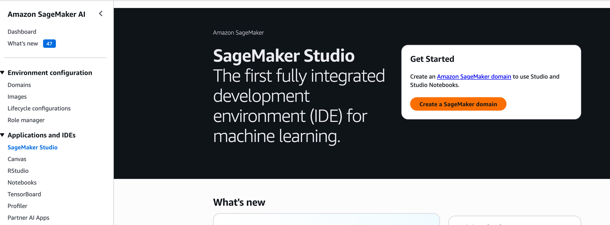
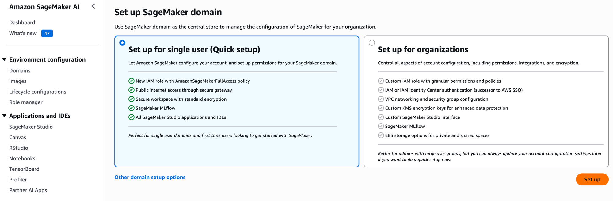
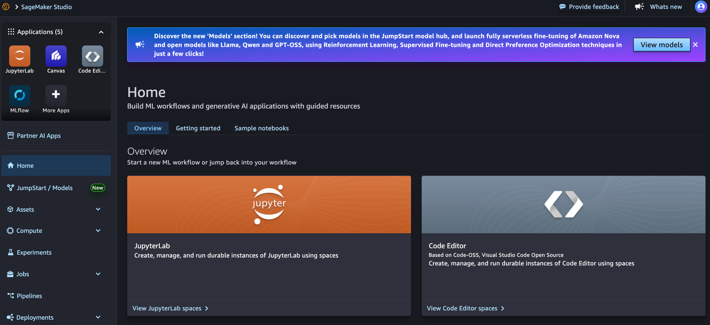
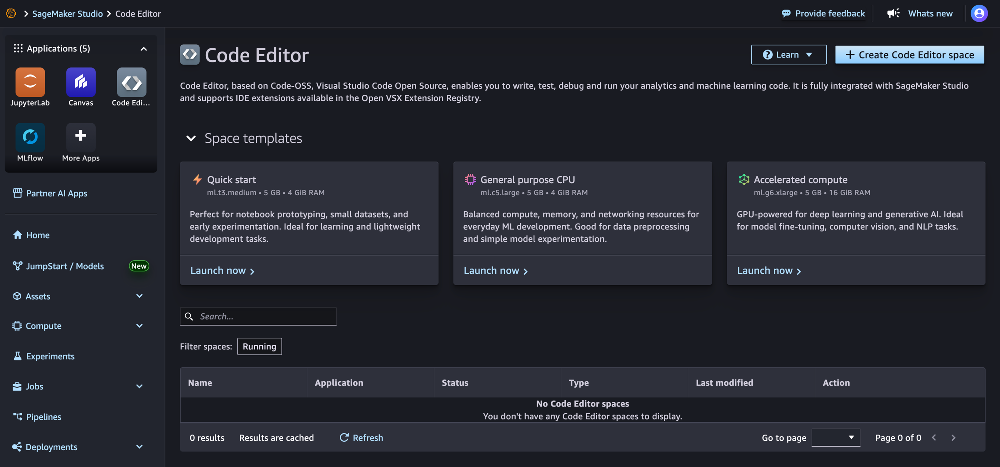
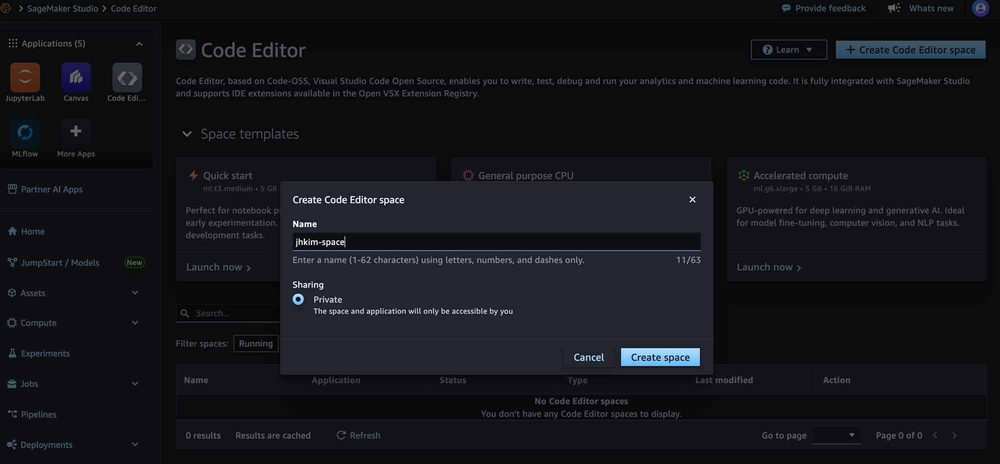
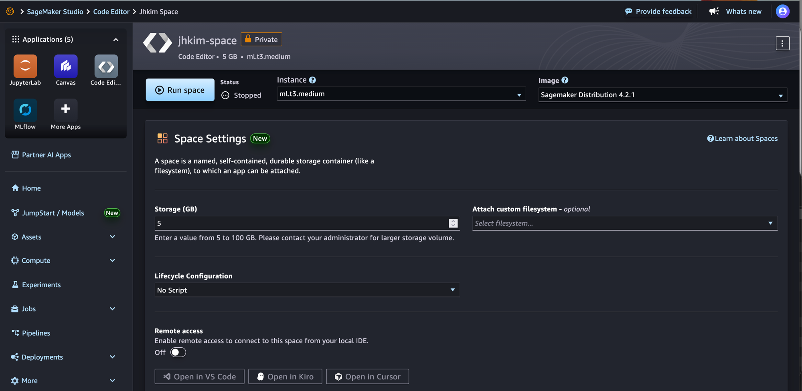
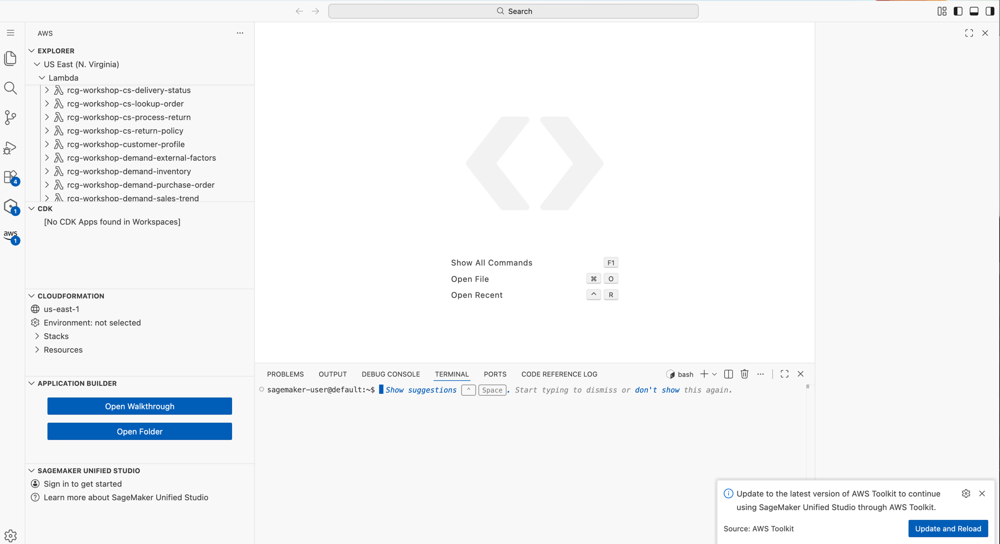

환경 세팅¶
시작 전 반드시 완료
이 페이지의 모든 단계를 완료해야 Phase 1을 시작할 수 있습니다.
전체 흐름¶
graph LR
A["☁️ <b>CloudShell</b><br/>인프라 배포 · 5분"]
B["💻 <b>Code Editor</b><br/>Agent 개발 · 워크샵 전체"]
A -->|"Lambda + IAM + S3"| B
style A fill:#ff9900,stroke:#ff9900,color:#1a1a2e,font-weight:bold
style B fill:#42a5f5,stroke:#42a5f5,color:#1a1a2e,font-weight:bold
linkStyle 0 stroke:#ff9900,stroke-width:3px코드 클론 → Lambda 11개 → IAM → Mock 사이트
Python 환경 → Agent 코드 → Gateway → 배포 → 테스트
Part A: CloudShell에서 인프라 배포¶
A-0. SageMaker Domain 생성 (먼저!)¶
Domain 생성에 3~5분 소요 — CloudShell 작업 전에 먼저 시작하세요
백그라운드로 생성되는 동안 A-1~A-3을 진행할 수 있습니다.
Step 1. Console 상단 검색창에 SageMaker 입력 → Amazon SageMaker AI → 좌측 SageMaker Studio 클릭 → "Create a SageMaker domain" 클릭

Step 2. "Set up for single user (Quick setup)" 선택 (기본값) → 우측 하단 Set up 클릭

- 3~5분 대기 → Domain Status가
InService가 되면 완료 - 이 동안 아래 A-1~A-3 CloudShell 작업을 병행하세요
왜 먼저 만드나요?
이후 A-4 단계에서 grant-sagemaker-permissions.sh가 SageMaker Execution Role을 자동 탐색합니다.
Domain이 없으면 Role을 찾지 못해 수동 입력이 필요합니다.
AWS Console → CloudShell 열기
콘솔 상단 바에서 >_ 아이콘을 클릭하면 CloudShell이 열립니다.
리전을 us-east-1 (N. Virginia)로 설정하세요.
A-1. 코드 클론¶
git clone https://github.com/kjhyuok/rcg-agentcore-workshop.git ~/workshop
cd ~/workshop
chmod +x infra/*.sh
A-2. 인프라 원스톱 배포¶
이 스크립트가 하는 일:
- ✅ IAM Role 2개 생성 (Lambda 실행용, Gateway용)
- ✅ Lambda 11개 배포 (Phase 1~2B Tool 함수)
- ✅ Mock 사이트 S3 배포 (Browser Tool용)
- ✅ 환경변수 파일 생성 (
.env.w001)
정상 출력 예시
╔══════════════════════════════════════════════════════════╗
║ 🚀 RCG AgentCore Workshop — 원스톱 배포 ║
╠══════════════════════════════════════════════════════════╣
║ Participant ID : w001
║ Region : us-east-1
║ Account : 123456789012
╚══════════════════════════════════════════════════════════╝
[1/4] IAM Role 생성...
✅ rcg-workshop-lambda-role 생성
✅ rcg-workshop-gateway-role 생성
[2/4] Lambda 11개 배포...
✅ rcg-workshop-customer-profile (생성)
✅ rcg-workshop-product-search (생성)
...
[3/4] Mock 사이트 배포...
✅ Mock 사이트: http://rcg-workshop-mock-123456789012.s3-website-us-east-1.amazonaws.com
╔══════════════════════════════════════════════════════════╗
║ 🎉 배포 완료! 아래 환경변수를 설정하세요 ║
╠══════════════════════════════════════════════════════════╣
export AWS_REGION=us-east-1
export ACCOUNT_ID=123456789012
export PARTICIPANT_ID=w001
export MOCK_SITE_URL=http://rcg-workshop-mock-...
export GATEWAY_ROLE_ARN=arn:aws:iam::123456789012:role/rcg-workshop-gateway-role
╚══════════════════════════════════════════════════════════╝
A-2.5. 환경변수 설정 (필수!)¶
반드시 실행하세요
onestop.sh는 서브셸에서 실행되므로, 스크립트가 출력한 환경변수가 현재 CloudShell 세션에 자동 반영되지 않습니다.
출력된 export 구문을 복사해서 CloudShell에 붙여넣어야 이후 단계가 정상 동작합니다.
출력 마지막에 나온 export 5줄을 복사하여 CloudShell에 붙여넣기:
export AWS_REGION=us-east-1
export ACCOUNT_ID=<출력된 값>
export PARTICIPANT_ID=w001
export MOCK_SITE_URL=http://rcg-workshop-mock-<ACCOUNT_ID>.s3-website-us-east-1.amazonaws.com
export GATEWAY_ROLE_ARN=arn:aws:iam::<ACCOUNT_ID>:role/rcg-workshop-gateway-role
또는 생성된 .env 파일을 source해도 됩니다:
설정 확인:
A-3. 배포 확인¶
aws lambda list-functions \
--query "Functions[?starts_with(FunctionName, 'rcg-workshop')].FunctionName" \
--output table --region us-east-1
정상 출력 (11개 Lambda)
+---------------------------------------+
| rcg-workshop-customer-profile |
| rcg-workshop-product-search |
| rcg-workshop-purchase-history |
| rcg-workshop-cs-lookup-order |
| rcg-workshop-cs-return-policy |
| rcg-workshop-cs-process-return |
| rcg-workshop-cs-delivery-status |
| rcg-workshop-demand-inventory |
| rcg-workshop-demand-sales-trend |
| rcg-workshop-demand-external-factors |
| rcg-workshop-demand-purchase-order |
+---------------------------------------+
A-4. SageMaker Code Editor 권한 부여¶
이 스크립트가 하는 일:
- SageMaker Execution Role을 자동 탐색
- Bedrock (모델 호출 + Converse API) 권한 추가
- AWS Marketplace (모델 최초 구독) 권한 추가
- AgentCore (Gateway, Memory, Runtime, Policy) 권한 추가
- Lambda 호출 권한 추가
정상 출력
🔐 SageMaker Code Editor 권한 설정
Account: 123456789012
Region: us-east-1
[1/2] SageMaker Execution Role 탐색...
✅ Role 찾음: AmazonSageMaker-ExecutionRole-xxxxx
[2/2] Bedrock + AgentCore 권한 추가...
✅ 인라인 정책 추가: RCGWorkshopBedrockAgentCoreAccess
╔══════════════════════════════════════════════════════════╗
║ ✅ SageMaker 권한 설정 완료! ║
║ ║
║ Code Editor에서 Bedrock + AgentCore 호출이 ║
║ 가능합니다. ║
╚══════════════════════════════════════════════════════════╝
A-5. 환경변수 확인 (메모해두세요!)¶
onestop.sh 출력 마지막에 나온 환경변수를 메모합니다. Code Editor에서 사용합니다:
이 값들을 복사해두세요
CloudShell과 Code Editor는 파일 시스템이 분리되어 있습니다.
.env.w001 파일은 CloudShell에만 있으므로, 내용을 복사해서 Code Editor에서 붙여넣어야 합니다.
Part A 완료!
CloudShell 작업 끝. 이제 SageMaker Code Editor로 이동합니다.
Part B: SageMaker Code Editor에서 실습 환경 구성¶
B-0. Code Editor Space 생성 & 진입¶
Step 1. Console → SageMaker AI → Studio → Home 화면에서 우측 Code Editor 카드 클릭

Step 2. 우측 상단 "+ Create Code Editor space" 클릭

Step 3. Name에 workshop 입력 → Create space 클릭

Step 4. Instance: ml.t3.medium (기본값) → Run space 클릭

Step 5. Status가 Running이 되면 Open 클릭 → VS Code 환경 진입 완료

여기까지 완료되면
왼쪽 AWS Explorer에서 배포된 Lambda 함수들이 보입니다.
하단 터미널(sagemaker-user@default:~$)에서 다음 단계를 진행합니다.
B-1. 코드 클론 & Python 환경¶
Code Editor 터미널에서:
git clone https://github.com/kjhyuok/rcg-agentcore-workshop.git ~/workshop
cd ~/workshop
chmod +x infra/*.sh
./infra/setup-python.sh
setup-python.sh이 하는 일
Python 가상환경(venv) 생성, 필수 라이브러리 설치, Playwright 브라우저 설치를 자동으로 수행합니다.
B-2. 가상환경 활성화¶
터미널을 새로 열 때마다 이 명령을 실행하세요
Code Editor 세션이 끊겼다 재연결되면 venv가 비활성화됩니다.
B-3. 환경변수 설정¶
환경변수 파일을 생성하고 로드합니다:
cat > ~/workshop/.env.w001 << 'EOF'
export AWS_REGION=us-east-1
export ACCOUNT_ID=$(aws sts get-caller-identity --query Account --output text)
export PARTICIPANT_ID=w001
export MOCK_SITE_URL="http://rcg-workshop-mock-$(aws sts get-caller-identity --query Account --output text).s3-website-us-east-1.amazonaws.com"
export GATEWAY_ROLE_ARN="arn:aws:iam::$(aws sts get-caller-identity --query Account --output text):role/rcg-workshop-gateway-role"
EOF
source ~/workshop/.env.w001
확인:
세션이 끊겼을 때 복구 방법
Code Editor 세션이 끊겼다 재연결되면 환경변수가 초기화됩니다. 아래 한 줄로 복구하세요:
B-4. Bedrock 모델 접근 확인¶
python3 -c "
from strands import Agent
from strands.models import BedrockModel
model = BedrockModel(model_id='us.anthropic.claude-sonnet-4-6', region_name='us-east-1')
agent = Agent(model=model, system_prompt='테스트')
print(agent('안녕? 한 줄로 답해.'))
print('✅ Bedrock 모델 접근 OK')
"
B-5. AgentCore CLI 확인¶
B-6. Code Interpreter & Browser 확인¶
python3 -c "
from strands_tools.code_interpreter import AgentCoreCodeInterpreter
from strands_tools.browser import AgentCoreBrowser
ci = AgentCoreCodeInterpreter(region='us-east-1')
print('✅ Code Interpreter 초기화 OK')
br = AgentCoreBrowser(region='us-east-1')
print('✅ Browser Tool 초기화 OK')
"
권한 에러가 발생하면
IAM Role에 다음 권한이 필요합니다:
bedrock-agentcore:InvokeCodeInterpreterbedrock-agentcore:InvokeBrowser
워크샵 환경에서는 이미 설정되어 있어야 합니다. 에러 발생 시 진행자에게 문의하세요.
📋 환경변수 한눈에 보기 (워크샵 전체)¶
이 블록을 저장해두세요
아래 환경변수는 워크샵 진행하며 채워집니다. Phase 시작 전에 이 값들이 설정되어 있는지 확인하세요.
export AWS_REGION=us-east-1
export ACCOUNT_ID=$(aws sts get-caller-identity --query Account --output text)
export MOCK_SITE_URL="http://rcg-workshop-mock-${ACCOUNT_ID}.s3-website-us-east-1.amazonaws.com"
export GATEWAY_ROLE_ARN="arn:aws:iam::${ACCOUNT_ID}:role/rcg-workshop-gateway-role"
# --- Phase 1 (Gateway 생성 후 채워짐) ---
export AGENTCORE_GATEWAY_URL=<setup-gateway.py 출력값>
export GATEWAY_ID=<Gateway ID>
# --- Phase 2 (Memory 생성 후 채워짐) ---
export AGENTCORE_MEMORY_ID=<setup-memory.py 출력값>
# --- Phase 3 (배포 후 채워짐) ---
export MY_AGENT_ARN=<agentcore deploy 출력값>
🔍 환경변수 체크 (Phase 시작 전 확인용)¶
각 Phase 시작 전에 아래 명령어로 환경변수가 설정되어 있는지 확인하세요. 빈 줄이 있으면 해당 값이 누락된 것입니다.
echo "=== Part A (기본) ==="
echo "AWS_REGION: $AWS_REGION"
echo "ACCOUNT_ID: $ACCOUNT_ID"
echo "MOCK_SITE_URL: $MOCK_SITE_URL"
echo "GATEWAY_ROLE_ARN: $GATEWAY_ROLE_ARN"
echo ""
echo "=== Phase 1 (Gateway 생성 후) ==="
echo "AGENTCORE_GATEWAY_URL: $AGENTCORE_GATEWAY_URL"
echo "GATEWAY_ID: $GATEWAY_ID"
echo ""
echo "=== Phase 2 (Memory 생성 후) ==="
echo "AGENTCORE_MEMORY_ID: $AGENTCORE_MEMORY_ID"
echo ""
echo "=== Phase 3 (배포 후) ==="
echo "MY_AGENT_ARN: $MY_AGENT_ARN"
값이 비어 있으면
- Part A 값이 비었으면:
source ~/workshop/.env.w001 - Phase 1~3 값이 비었으면: 해당 Phase의 setup 스크립트를 아직 실행하지 않은 것 (정상)
준비 완료!
모든 체크가 통과했으면 Phase 1: Gateway + Runtime + Observability로 이동하세요.